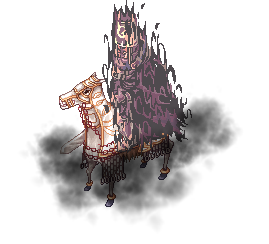
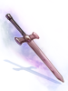
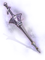
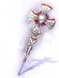
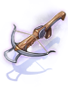
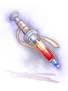

Glast Heim: Challenge Mode
- For the lv130 instance that gives access to Temporal Boots, see Old Glast Heim. For other uses, see Glast Heim.
| This quest or instance is repeatable. | ||
|---|---|---|
| Cooldown | Tickets Available | |
|
3 days |
Solo: 0 | Party: 0 |
| Requirements | |
|---|---|
| Base Level: | 170 |
| Starting Point: | |
| Prerequisite(s): | Old Glast Heim - Hard |
| Rewards | |
| Experience: | N/A |
| Items: | Varies with level |
Glast Heim: Challenge Mode differs from your regular instance, offering 10 distinct difficulty levels.
Each level not only makes all mobs present inside the instance harder, but also adds extra mechanics and difficulty to its boss, Phantom Amdarais, on top of extra and increased rewards.
Difficulty levels
Every time a character completes any level, your number of completions increase by 1. New difficulty levels unlock by completing the instance multiple times on the same character.
The level of difficulty will also determine the HP and damage of all monsters, the regeneration amount applied to the boss, skills and mechanics during the boss fight and which rewards are available.
When creating the instance, only the party leader's progression matters when selecting the difficulty. For example, if the party leader has access to difficulty level 5, a new person who has never done the instance before can also join and do the level 5.
| Level | Completions | Boss HP |
|---|---|---|
| Lv 1 | Start at Lv 1 | 600,000,000 |
| Lv 2 | 5 completions | 750,000,000 |
| Lv 3 | 11 completions | 900,000,000 |
| Lv 4 | 18 completions | 1,050,000,000 |
| Lv 5 | 26 completions | 1,200,000,000 |
| Lv 6 | 35 completions | 1,350,000,000 |
| Lv 7 | 45 completions | 1,500,000,000 |
| Lv 8 | 60 completions | 1,650,000,000 |
| Lv 9 | 80 completions | 1,800,000,000 |
| Lv 10 | 100 completions | 2,000,000,000 |
Challenges
If a player wishes to get into the higher levels faster, one can complete the daily challenges that prompt in there after selecting the level of difficulty (Pollution Level) and complete them for extra completed runs without the need of doing them.
Rewards
Here are the number of runs a player gets as a bonus for completing the challenges:
- Clearing one 1-star challenge and one 2-star challenge rewards 1 bonus progression.
- Clearing two 1-star challenges and one 3-star challenge rewards 2 bonus progression.
Examples of Challenges
Some examples of the challenges available in there:
- 1-star challenges
- Defense is for the weak: Reduces your defense and magic defense to 0.
- Resistance is futile: Reduces all your elemental resistances to 0.
- Neutral Situation: Changes your armor element to neutral regardless of what it was prior.
- Regenerative Growth: The MVP's healing capability is greatly increased.
- Toxicity: All players lose a percentage of their HP every few seconds.
- Kronos' Retribution: Every few seconds during the boss fight, a random party member will take a large amount of damage.
- Potion Rationing: All consumables have a forced 2-second cooldown.
- Get over here!: A random party member will be warped near a thorn during the boss fight.
- Invincible Thorn: Thorns cannot be damaged nor killed.
- Don't Move!: Every few seconds during the boss fight, all players are rooted in place.
- 2-star challenges
- Slippery Hands: Every few seconds, all players get a random piece of equipment stripped.
- HEAL PLZ!: Healing rate of all items and skills is greatly reduced.
- Sent to the Graveyard: If a player dies during the boss fight, he is warped out of the fighting zone.
- Want a green pot my dude?: Every few seconds, all party members will be affected by a random status effect that cannot be resisted or prevented.
- No pain, no gain: The boss, at any level, can cast Max Pain, which cannot be removed.
- 3-star challenge
- Deathless: If anyone on your party dies, the challenge will fail and the boss fight restarts.
Notes
- Challenges presented rotate on a daily basis and player can only select the challenge difficulty level of them.
- Challenges only count for the party if the party leader selects the higher level available for that character. This means that lower levels still present the challenges but they don't count.
- Failing the 3-star challenge rewards no bonus progression for the run.
Walkthrough
- Make your party and talk to Oscar at to generate the instance. You can use the Warper > Instances > Glast Heim Challenge Mode.
- Make sure everyone in your party is ready. Upon entering, the party configuration is locked and you will not be able to add new party members.
- Once inside, you'll meet Oscar again. The party leader has to talk to him to select your desired difficulty level.
- Your party will randomly get split between both sides of the map. Each side contains 50 monsters and you must kill 47 from each side to proceed. If you finish one side, you'll be able to go to the other side via a portal.
- Once enough monsters are killed on both sides, both portals will lead you to the main corridor. If you've killed mobs fast enough, there is a chance that Prime Corruption Roots spawn on the corridor. Roots despawn and instantly kill anyone in a 15x15 area, if not killed in 30 seconds. Failing this step or not killing any Roots does not affect your progress in the instance.
- After walking down the main corridor, talk to Oscar again to open the passage to the boss room.
- After a brief cutscene, you'll be able to talk to Oscar again to start the boss fight.
- There is a small chance that Himmelmez will appear and fight you instead.
Progression Transfer
This is a custom feature to transfer your progression from one character to another within the same account at the cost of 1,000,000 zeny. Talk to the Dimensional Magician at to begin this process. It can only be done for characters within the same account and both characters must not have a cooldown on the instance. You therefore cannot progress faster using this method.
Enemies
| Image | Name | Level | HP | Size / Race / Element |
|---|---|---|---|---|
|  | Mutated White Knight | 188 | 2,450,483 | Large / Undead / Dark 3 |
| Mutated Khalitzburg | 185 | 2,401,358 | Medium / Undead / Dark 3 | |
| Mutated Raydric | 182 | 2,362,114 | Medium / Demihuman / Dark 2 | |
| Mutated Raydric Archer | 186 | 2,394,654 | Medium / Demon / Dark 2 | |
| Prime Corruption Root | 190 | 5,000,000 | Large / Demon / Earth 3 | |
| Mutated Thorn | 185 | 10 | Small / Demon / Ghost 4 |
Phantom Amdarais and Himmelmez
Phantom Amdarais (or Phantom Himmelmez) have special mechanics which drastically alters the fight compared to regular instance bosses.
| Image | Name | Level | HP | Size / Race / Element |
|---|---|---|---|---|
| Phantom Amdarais | 192 | (450,000,000 + [150,000,000 * Difficulty Level]) | Large / Demon / Dark 3 | |
| Phantom Himmelmez | 195 | (450,000,000 + [150,000,000 * Difficulty Level]) | Medium / Angel / Holy 3 |
Skills and Mechanics
Level 1 onwards
- The boss will only take 1 damage from any attack if any party member is disconnected, dead or enters the instance late.
- If the boss is taken outside the area (demarcated by Mutated Thorns) for more than 30 seconds, the fight will restart.
- If the whole party is dead for more than 5 minutes, the boss despawns and Oscar reappears. You can resummon the boss by talking to him.
- The boss permanently passively regenerates a large amount of health every 2 seconds.
- Players are randomly dragged and teleported inside the arena after the boss takes a large amount of damage.
- Whenever the boss HP drops below 90%, a grid of Mutated Thorns appear and start casting Dark Grand Cross after 5 seconds.
 X Firewall: Summons Firewall in an 'X' pattern, damaging and pushing back anyone caught in it.
X Firewall: Summons Firewall in an 'X' pattern, damaging and pushing back anyone caught in it. Ground Drive #1: Casts multiple
Ground Drive #1: Casts multiple  Heaven's Drive in a '+' pattern.
Heaven's Drive in a '+' pattern.- Ground Drive #2: Casts multiple Heaven's Drive around the boss, then in a '+' pattern.
 Immune Property: For 30 seconds, Phantom Amdarais receives immunity to the damage of its elemental weakness, which is Holy.
Immune Property: For 30 seconds, Phantom Amdarais receives immunity to the damage of its elemental weakness, which is Holy. Grand Darkness: The boss casts Grand Darkness, a shadow element
Grand Darkness: The boss casts Grand Darkness, a shadow element  Grand Cross.
Grand Cross. Rain of Meteors: The boss shoots meteors, dealing fire property magic damage in an 'X' or '+' pattern.
Rain of Meteors: The boss shoots meteors, dealing fire property magic damage in an 'X' or '+' pattern. Demonic Hell's Judgement: Deals damage to everyone in a 13x13 area, dealing Shadow property physical damage and inflicting a random status effect.
Demonic Hell's Judgement: Deals damage to everyone in a 13x13 area, dealing Shadow property physical damage and inflicting a random status effect. Ganbantein Lv 9: Instantly clears all ground spells in a 9x9 area around the boss.
Ganbantein Lv 9: Instantly clears all ground spells in a 9x9 area around the boss. Reflect Shield: Reflects melee physical damage to attackers.
Reflect Shield: Reflects melee physical damage to attackers.- The boss spawns mobs at certain HP thresholds:
- When below 70% HP, Mutated Khalitzburg spawns.
- When below 50% HP, Mutated White Knight spawns.
- When below 30% HP, Mutated Raydric Archer spawns.
Level 3 onwards
 Max Pain: Happens while the boss is below 70% health. Reflects damage taken to everyone on your party for 10 seconds.
Max Pain: Happens while the boss is below 70% health. Reflects damage taken to everyone on your party for 10 seconds.- An invunerable Reaper Yanku can spawn and start slowly hovering towards the boss. If both touch, the boss' HP regeneration lowers, while its attack increases. This can stack indefinitely.
Level 9 onwards
 Gradual Gravity: Applies a debuff that deals damage over time based on your maximum health.
Gradual Gravity: Applies a debuff that deals damage over time based on your maximum health.- A blue circle effect randomly appears inside the arena. The boss must be lured to the circle within 1 minute, or it enrages and deals more damage.
Level 10
- A blue circle effect randomly appears inside the arena. The boss must be lured to the circle within 1 minute, or it enrages and deals more damage.
Himmelmez differences
Himmelmez shares all mechanics with Phantom Amdarais, with some variations:
- Immune Property: For 30 seconds, the Himmelmez receives immunity to the damage of its elemental weakness, which is Shadow.
- Grand Cross: Instead of Grand Darkness, Himmelmez casts Grand Cross.
Rewards
After defeating the final boss of the instance, a treasure chest spawns. The amount for all rewards scale with difficulty level.
| Reward | Difficulty level | |||||||||
|---|---|---|---|---|---|---|---|---|---|---|
| Lv 1 | Lv 2 | Lv 3 | Lv 4 | Lv 5 | Lv 6 | Lv 7 | Lv 8 | Lv 9 | Lv 10 | |
| Sealed Temporal Circlet | 1~5 | 1~6 | 2~7 | 2~8 | 3~9 | 3~10 | 4~10 | 4~10 | 5~10 | 5~10 |
| Temporal Gemstone | 0 | 0 | 1~3 | 1~4 | 1~4 | 1~5 | 2~5 | 2~6 | 2~6 | 2~7 |
| Temporal Spell | 0 | 0 | 0 | 0 | 1~3 | 3~7 | 5~11 | 8~16 | 11~22 | 14~28 |
| Temporal Fragment | 1~15 | 1~20 | 1~25 | 1~30 | 2~30 | 2~30 | 3~30 | 3~30 | 4~30 | 4~30 |
Additionally, each player receives extra Sealed Temporal Circlets by talking to Oscar. Each of the following challenges award a single Sealed Temporal Circlet:
- Defeating the MVP.
- Defeating all Prime Corruption Roots before they despawn.
- Defeating the MVP without it enraging or the fight restarting.
Item Exchange
| Item | Cost | NPC |
|---|---|---|
| Temporal Circlet (choose) |
5 Sealed Temporal Circlet |  HUGINN2001 |
| Sealed Conversion | 1 Sealed Temporal Circlet | |
 Mutated White Knight Card Mutated White Knight Card
|
20 Temporal Spell | |
 Mutated Khalitzburg Card Mutated Khalitzburg Card
|
30 Temporal Spell | |
| Royal Guardian Weapon (random) |
10 Temporal Fragment |  MUNNIN2003 |
| Royal Guardian Weapon (choose) |
10 Temporal Spell |
Royal Guardian Weapons
| Image | Name | Description |
|---|---|---|
|  | Guardian Knight Claymore [2] |
Atk + 5%.
When equipped with
|
|  | Guardian Knight Spear [2] |
Increases long ranged physical damage by 1% per refine rate.
When equipped with
|
| Guardian Knight Jewel Sword [2] |
Matk + 180.
When equipped with
| |
| Guardian Knight Axe [2] |
Can't be destroyed
When equipped with Class : Axe
| |
| Guardian Knight Battle Axe [2] |
Atk + 5%
When equipped with
| |
| Royal Gladius (R) [2] |
Atk + 5%.
When equipped with
| |

|
Royal Gladius (L)[3] |
Has no effect. Used for combo with Royal Gladius (R).
|
| Royal Katar [2] |
Atk + 5%.
When equipped with
| |
| Royal Magician Dagger [2] |
Matk + 170
When equipped with
| |
|  | Royal Cleric Staff [2] |
Can't be destroyed
When equipped with Class : Staff
|
| Royal Magician Staff [2] |
Can't be destroyed
When equipped with Class : Two-handed Staff
| |
|  | Guardian Knight Bow [2] |
Increases long ranged physical damage by 15%
When equipped with
|
| Royal Magician Wand [2] |
Can't be destroyed
When equipped with Class : Staff
| |

|
Royal Sage Book [2] |
Can't be destroyed
When equipped with Class : Book
|

|
Royal Cello [2] |
Can't be destroyed
When equipped with Class : Instrument
|
| Royal Whip [2] |
Can't be destroyed
When equipped with Class : Whip
| |
| Royal Pillar [2] |
Can't be destroyed
When equipped with Class : Mace
| |
|  | Royal Syringe [2] |
Can't be destroyed
When equipped with Class : Mace
|
| Royal Alchemy Staff [2] |
Can't be destroyed
When equipped with
| |
| Royal Knight Archer Bow [2] |
Increases long ranged physical damage by 15%
When equipped with
| |
| Royal Knuckle [2] |
Increases long ranged physical damage by 15%
When equipped with
| |
| Royal Revolver [2] |
Increases long ranged physical damage by 15%
When equipped with
| |
| Royal Huuma Shuriken [2] |
Increases long ranged physical damage by 15%
When equipped with
| |
| Royal Foxtail [2] |
Can't be destroyed
When equipped with
|


Temporal Circlets
| Image | Name | Description |
|---|---|---|
| Temporal Circlet (Rune Knight) [1] |
MaxHP + 250 per 2 refine rate.
| |
| Temporal Circlet (Royal Guard) [1] |
Atk + 15 per 2 refine rate.
| |
| Temporal Circlet (Mechanic) [1] |
Atk + 15 per 2 refine rate.
| |
| Temporal Circlet (Genetic) [1] |
Atk + 15 per 2 refine rate.
| |

|
Temporal Circlet (Guillotine Cross) [1] |
Atk + 15 per 2 refine rate.
|
| Temporal Circlet (Shadow Chaser) [1] |
Atk + 15 per 2 refine rate.
| |
| Temporal Circlet (Archbishop) [1] |
Matk + 15 per 2 refine rate.
| |
| Temporal Circlet (Sura) [1] |
Atk + 15 per 2 refine rate.
| |

|
Temporal Circlet (Warlock) [1] |
Matk + 15 per 2 refine rate.
|
| Temporal Circlet (Sorcerer) [1] |
Matk + 15 per 2 refine rate.
| |
| Temporal Circlet (Ranger) [1] |
Atk + 15 per 2 refine rate.
| |
| Temporal Circlet (Wanderer & Minstrel) [1] |
Matk + 15 per 2 refine rate.
| |
| Temporal Circlet (Star Emperor) [1] |
Atk + 15 per 2 refine rate.
| |
| Temporal Circlet (Soul Reaper) [1] |
Matk + 15 per 2 refine rate.
| |
| Temporal Circlet (Rebellion) [1] |
Atk + 15 per 2 refine rate.
| |
| Temporal Circlet (Oboro) [1] |
Matk + 15 per 2 refine rate.
| |
| Temporal Circlet (Kagerou) [1] |
Atk + 15 per 2 refine rate.
| |

|
Temporal Circlet (Super Novice)[1] |
Atk + 10 and Matk + 10 per 2 refine rate.
|
| Temporal Circlet (Summoner) [1] |
Atk + 15 per 2 refine rate.
|


Temporal Circlets Enchantment

Talk to OSC0005 to start the enchanting process.


Special Enchants
There are 7 special enchants:  Unyielding,
Unyielding,  Mettle,
Mettle,  Magic Essence,
Magic Essence,  Acute,
Acute,  Master Archer,
Master Archer,  Adamantine,
Adamantine,  Affection.
Affection.
When obtaining one of these special enchants, you will be given the option to either keep it or re-roll up to five times. The re-rolls roll the third enchant only, have no additional charge, and are forsaken when you leave the NPC. The enchant pool remains the same for the re-rolls. Obtaining another special enchants during the re-rolls will NOT give you more re-rolls.
Special enchants can receive incremental level upgrades, similar to the Tomb of the Fallen enchant upgrade process.
| Special Enchant Levels | ||||||||||
|---|---|---|---|---|---|---|---|---|---|---|
| Type | Levels | |||||||||
| Unyielding | Unyielding Lv.1
Melee physical damage +4%
|
 Unyielding Lv.2 Unyielding Lv.2
Melee physical damage +8%
|
 Unyielding Lv.3 Unyielding Lv.3
Melee physical damage +12%
|
 Unyielding Lv.4 Unyielding Lv.4
Melee physical damage +16%
|
 Unyielding Lv.5 Unyielding Lv.5
Melee physical damage +20%
|
 Unyielding Lv.6 Unyielding Lv.6
Melee physical damage +24%
|
 Unyielding Lv.7 Unyielding Lv.7
Melee physical damage +28%
|
 Unyielding Lv.8 Unyielding Lv.8
Melee physical damage +32%
|
 Unyielding Lv.9 Unyielding Lv.9
Melee physical damage +36%
|
 Unyielding Lv.10 Unyielding Lv.10
Melee physical damage +44%
|
| Mettle | Lv. 1
Atk + 4%
|
 Lv. 2 Lv. 2
Atk + 8%
|
 Lv. 3 Lv. 3
Atk + 12%
|
 Lv. 4 Lv. 4
Atk + 16%
|
 Lv. 5 Lv. 5
Atk + 20%
|
 Lv. 6 Lv. 6
Atk + 24%
|
 Lv. 7 Lv. 7
Atk + 28%
|
 Lv. 8 Lv. 8
Atk + 32%
|
 Lv. 9 Lv. 9
Atk + 36%
|
 Lv. 10 Lv. 10
Atk + 40%
|
| Magic Essence |  Lv. 1 Lv. 1
Matk + 4%
|
 Lv. 2 Lv. 2
Matk + 8%
|
 Lv. 3 Lv. 3
Matk + 12%
|
 Lv. 4 Lv. 4
Matk + 16%
|
 Lv. 5 Lv. 5
Matk + 20%
|
 Lv. 6 Lv. 6
Matk + 24%
|
 Lv. 7 Lv. 7
Matk + 28%
|
 Lv. 8 Lv. 8
Matk + 32%
|
 Lv. 9 Lv. 9
Matk + 36%
|
 Lv. 10 Lv. 10
Matk + 44%
|
| Acute |  Lv. 1 Lv. 1
Crit + 3
|
 Lv. 2 Lv. 2
Crit + 6
|
 Lv. 3 Lv. 3
Crit + 9
|
 Lv. 4 Lv. 4
Crit + 12
|
 Lv. 5 Lv. 5
Crit + 15
|
 Lv. 6 Lv. 6
Crit + 18
|
 Lv. 7 Lv. 7
Crit + 21
|
 Lv. 8 Lv. 8
Crit + 24
|
 Lv. 9 Lv. 9
Crit + 27
|
 Lv. 10 Lv. 10
Crit + 30
|
| Master Archer | Lv. 1
Aspd + 1%
|
 Lv. 2 Lv. 2
Aspd + 2%
|
 Lv. 3 Lv. 3
Aspd + 3%
|
 Lv. 4 Lv. 4
Aspd + 4%
|
 Lv. 5 Lv. 5
Aspd + 5%
|
 Lv. 6 Lv. 6
Aspd + 6%
|
 Lv. 7 Lv. 7
Aspd + 7%
|
 Lv. 8 Lv. 8
Aspd + 8%
|
 Lv. 9 Lv. 9
Aspd + 9%
|
 Lv. 10 Lv. 10
Aspd + 10%
|
| Adamantine | Lv. 1
Max HP + 5%
|
 Lv. 2 Lv. 2
Max HP + 10%
|
 Lv. 3 Lv. 3
Max HP + 15%
|
 Lv. 4 Lv. 4
Max HP + 20%
|
 Lv. 5 Lv. 5
Max HP + 25%
|
 Lv. 6 Lv. 6
Max HP + 30%
|
 Lv. 7 Lv. 7
Max HP + 35%
|
 Lv. 8 Lv. 8
Max HP + 40%
|
 Lv. 9 Lv. 9
Max HP + 45%
|
 Lv. 10 Lv. 10
Max HP + 55%
|
| Affection | Lv. 1
Max SP + 3%
|
 Lv. 2 Lv. 2
Max SP + 6%
|
 Lv. 3 Lv. 3
Max SP + 9%
|
 Lv. 4 Lv. 4
Max SP + 12%
|
 Lv. 5 Lv. 5
Max SP + 15%
|
 Lv. 6 Lv. 6
Max SP + 18%
|
 Lv. 7 Lv. 7
Max SP + 21%
|
 Lv. 8 Lv. 8
Max SP + 24%
|
 Lv. 9 Lv. 9
Max SP + 27%
|
 Lv. 10 Lv. 10
Max SP + 30%
|
Every upgrade attempt has a chance of failure. Failing on the first upgrade will only consume the materials, while failing at Level 2 or above will also downgrade the enchant by 1 level.
There is no chance of breaking the headgear.
For levels 2 to 4, there's an additional option without a chance to downgrade, albeit at a higher cost.This does not guarantee a success and can still fail. Upon failure, you enchant will stay at the same level.
| Level Upgrade | Amount of Temporal Spell required |
|---|---|
| Lv1 -> Lv2 | 4 |
| Lv2 -> Lv3 | 6 or 18 for no chance to downgrade. |
| Lv3 -> Lv4 | 8 or 40 for no chance to downgrade. |
| Lv4 -> Lv5 | 10 or 60 for no chance to downgrade. |
| Lv5 -> Lv6 | 12 |
| Lv6 -> Lv7 | 16 |
| Lv7 -> Lv8 | 20 |
| Lv8 -> Lv9 | 28 |
| Lv9 -> Lv10 | 40 |
Enchantment Reset
You can reset all enchants on a given headgear by using one of the two options:
- 500,000 zeny - 70% success. The headgear is destroyed on failure.
- 2 Temporal Gemstone and 2 Sealed Temporal Circlet - 100% success.
Enchantment Re-roll
This is a custom feature allowing you to re-roll a specific enchant for your headgear at a higher price.
| Re-roll | First Enchant | Second Enchant (Normal) | Second Enchant (Special) |
|---|---|---|---|
| Material required | 50 Temporal Fragment 300,000 zeny |
100 Temporal Fragment 300,000 zeny |
6 Temporal Gemstone 500,000 zeny |
See Also
- Instances
- Legacy of Glast Heim
- Special thanks to the HazyForest Wiki